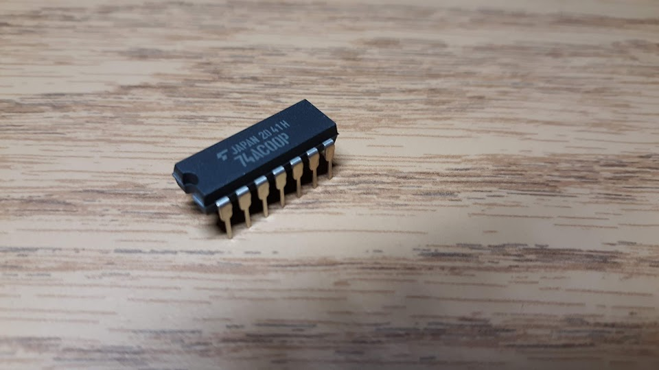
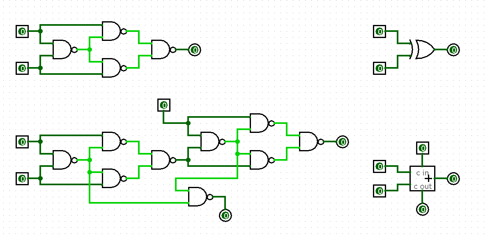
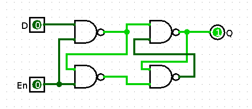

NANDy
Some time ago, I was idly playing around with digital logic and remembered something that seemed to be part of every piece of computer-engineering educational material: you can make any logical device out of NAND gates. (As an aside, NOR gates can do the same thing; I don't know why they don't get talked about as much. Heck, a computer made entirely out of NOR gates landed us on the moon.)
I decided to take a look at what it would take to implement an entire basic CPU using only standard off-the-shelf NAND gates. It turns out, this is a very bad idea.
Before we get too far into the weeds, I set some general ground rules and goals for this project:
- The CPU itself will be entirely NAND gates. That's kind of the whole point of the project.
- Any part which is strictly a NAND gate is permitted. This includes gates with any number of input pins as well as open-collector and other gate types. Schmitt-trigger gates are an interesting gray area, since they technically contain memory elements and therefore could be considered not just gates, but I don't plan to use any anyway, so it doesn't really matter.
- Parts that are not the CPU are not restricted to NAND gates. I briefly considered building RAM and ROM out of gates, but it gets extremely tedious extremely quickly for any useful amount of storage. Additionally, clock generators and other support components can be built however I like. However, I won't push this limit; integrated memory chips will be used only for things that are fundamentally memory, and not dubious cases like microcode ROMs.
- Peripheral devices don't have to be NAND gates, but it's more fun if they are. My general game plan is to implement these parts on an FPGA and then transfer them to dedicated ICs if they're simple enough.
Basics
Our building block for the project, for the most part, is going to be this:

This is about the most standard NAND gate you can get. It's a 4-module, 2-input CMOS gate compatible with 5V logic levels; the AC in the part number indicates that it's fairly fast, and most importantly it is very inexpensive in decent quantities.
As the theorem states, we can build any combinational logic we want out of these. Here's an XOR gate and a 1-bit full adder:

Building elements that have memory is a bit trickier, and a bit less elegant. Because memory elements tend to depend on themselves, they don't lend themselves well to concise mathematical representations, instead relying on timing and implementation details. Latches - components that allow their contents to change continuously whenever their clock signal is high - aren't too bad:

Flip-flops - elements that can instantaneously sample a signal on the rising or falling edge of the clock - are a bit more difficult. While it's possible to build a functioning CPU without these components, it's a bit more difficult; generally, it requires a two-phase clock or other similar strategy.
Back to Top